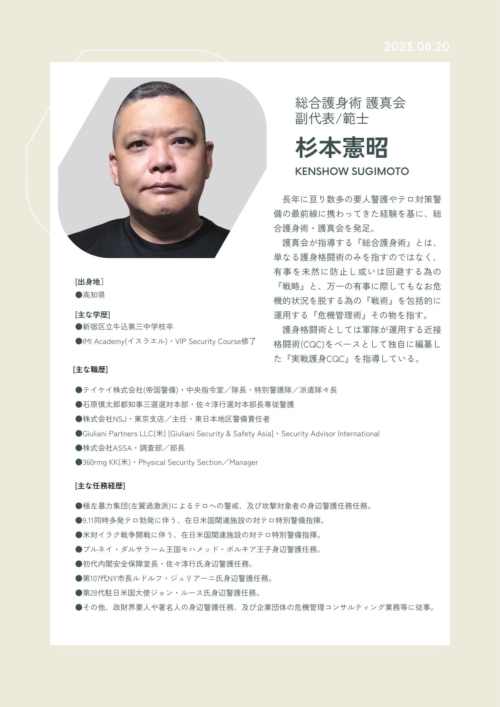

危機回避
危険な状況に近づかない、巻き込まれないための考え方も学びます。
未経験の方でも始めやすい環境で、実戦護身CQCだけでなく、危機回避・状況判断・法律知識まで含めて学びます。力だけに頼らず、自分の身を守るための総合護身術です。
トラブルの未然防止を第一に、事前回避、被害の極小化を図るための護身的戦略。そして、それら戦略を運用するための戦術。謂わば、一般個人にも運用可能な危機管理術を『総合護身術』と呼んでいます。
技だけではなく、危険を避ける意識、状況判断、法的な境界線まで含めて、実生活で役立つ総合護身術を学ぶことを重視しています。
危険な状況に近づかない、巻き込まれないための考え方も学びます。
現実的な場面を想定し、自分の身を守るための動き方を身につけます。
その場で何を優先するべきか、冷静に判断する視点も大切にしています。
直面する一次的な危機から事ができたとしても、その後に法的な責任を追求されることも珍しくありません。 護真会では一次的防衛のみならず、その先の法廷も見据えた二次的防衛も重視し、自らの正当性や社会的な地位を護る為に不可欠な法令上の知識の講習も実施しています。
実戦護身ＣＱＣを行使するにあたっては不可欠となる法令です。
急迫する危難から逃れる為に、やむを得ず他人の法益を侵害せざるを得ない場合もあります。
襲撃者による執拗な攻撃から逃れる事が困難な場合には、襲撃者を制圧逮捕する必要に迫られる場合もあります。
一般的な道場や体育館ならばのびのびと身体を動かす事もできますが、粗暴犯の多くは狭く人気の無い路地裏や薄暗い場所で展開されます。椅子やテーブル等の障害物もあるバー店内というリアルな環境で実施される実戦的講習は、他ではなかなか体験できるものではありません。
いかにも武道場という空気感ではないため、初めての方でも一歩踏み出しやすくなります。
神楽坂らしい落ち着いた空間で、無理なく継続しやすい環境を目指しています。
開催場所の関係上、講義終了後に1ドリンク付きのご案内が可能です。
神楽坂教室では、杉本 憲昭 師範がカリキュラムを組み、直接指導します。護身の技術だけでなく、危機回避や法律知識も含めて、実生活で役立つ内容を大切にしています。

総合護身術 護真会 副代表／範士 杉本 憲昭 師範
体験をご希望の方は、まずはお気軽にLINEからお問い合わせください。
神楽坂教室への体験申込・お問い合わせ・ご質問は、LINE公式アカウントから受け付けています。
友だち追加後、「体験希望」「問い合わせ」「質問」のいずれかをお送りください。